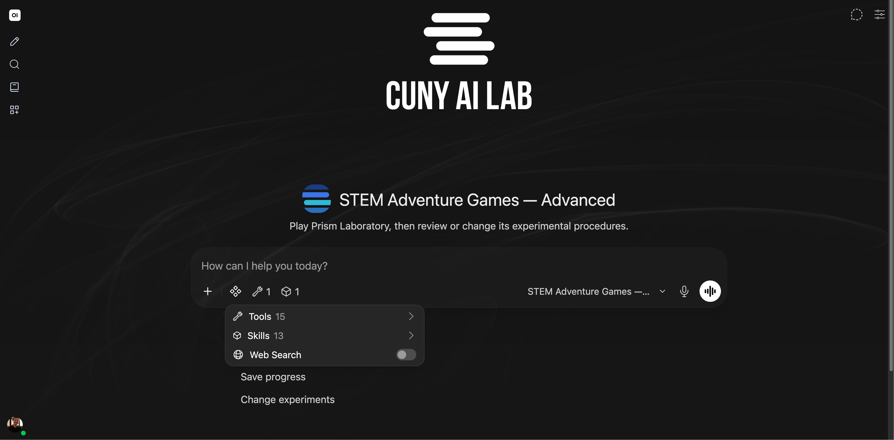
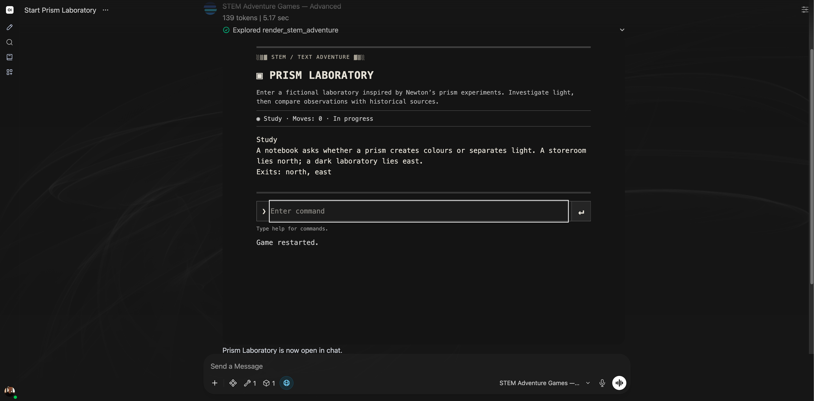
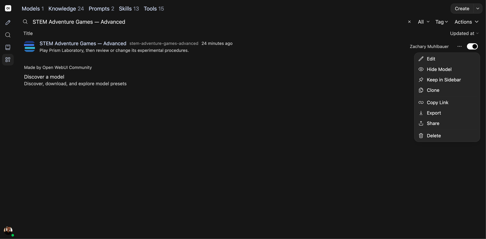
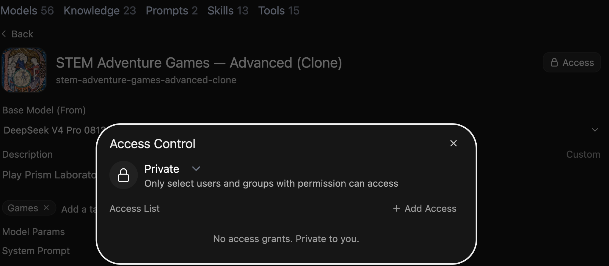
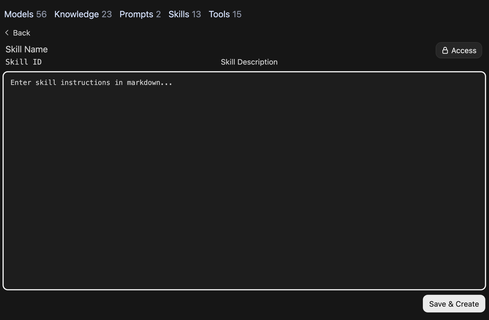

Composing system prompts
Getting Started with the CUNY AI Lab Sandbox

Alt text: CUNY AI Lab
Led by Zach Muhlbauer
New Media Lab · Room 7388.01
CUNY Graduate Center
Workshop Roadmap
Workshop Agenda
Introductions
What is your name, pronouns, and role at CUNY?
What brings you to this workshop today?
Sign In
Select Continue with CUNY Login and sign in with your CUNY account.
System Prompts
Select Models

Alt text: Sandbox logo, message box, and Gateway model selector; enlarged detail shows current model choices with model ID outlined and marked by an arrow.
Chat Features
Compare Models

Alt text: Sandbox logo, message box, and Gateway model selector; enlarged detail shows Compare beside search field outlined and marked by an arrow.
Who Was Late?
Winograd Schema Challenge
Compare Outputs
Compare Outputs
Gemma’s Response

Alt text: Gemma 3 27B response recommending walking, with model name and generation time.
Qwen’s Response

Alt text: Qwen3.5 27B response recommending driving, with model name and generation time.
Compare Models
Add System Prompt

Alt text: CUNY AI Lab logo, DeepSeek V4 Flash 0731, car wash question in message box, and short instructions in System Prompt; white annotations identify Controls button and populated System Prompt field.
Select Controls at top right of chat. Paste these instructions into System Prompt, then close Controls.
Identify purpose and separate facts from assumptions. Ask one clarifying question when needed. Answer concisely.
Regenerate Responses

Alt text: Mistral Large 3 response recommending walking, with original question and message box; white annotation marks response controls for Regenerate.

Alt text: Enlarged Mistral Large 3 response controls with Regenerate outlined and marked by an arrow.
Compare Responses
Compare Custom Models
Clone Models

Alt text: Workspace Models showing shared workshop examples; white annotation identifies Clone in More menu.
- Rename your copy.
- Revise one instruction in System Prompt; keep Base Model and other settings unchanged.
- Scroll to bottom and select Save & Create.
- Open your copy in a new chat and repeat your original request.
Compare Configurations

Alt text: Sandbox comparison with tabs for original Compare Wikipedia Edits and its clone; white annotations identify both model names above original response. Message box remains visible.
Send your original request to both models. Include source passages if you chose research. Select each model name to review its response.
What changed? Did your revised instruction work?
Record Comparisons
Draft System Prompts
Create Models

Alt text: Workspace Models filtered to shared workshop examples, with Create button outlined and marked by an arrow.
- Name your configuration.
- Select Base Model and paste your draft into System Prompt.
- Scroll to bottom and select Save & Create.
- Start a new chat with your model and try one request.
Workshop Resources
Curating knowledge collections
Curating knowledge collections
Workshop Agenda
Knowledge Collections
Choose Questions
Open Workspace

Alt text: Sandbox chat with CUNY AI Lab logo and message box visible; arrow marks Workspace in left sidebar
Review Model Settings
Save Initial Response
Retrieve Source Passages
Open STEM Collection

Alt text: STEM Wikipedia Experiments listing three Wikipedia imports and four added entries. Entries cover source status, List of experiments, procedural variations, and software checks.
Review Source Roles
Inspect Imported Text
Review Attached Knowledge

Alt text: STEM Adventure Games model editor with STEM Wikipedia Experiments attached under Knowledge; Tools and Skills have no selections. White outlines identify these controls.
Check Game Sources
Select Documents
Build Knowledge Collections
Choose documents that explain your course or research project and describe what you want to examine.
Choose Reference Materials
Create Knowledge Collections

Alt text: Current Create a knowledge base form with name, description, Private access, and Create Knowledge
Attach Knowledge Collections
Test Retrieval
Check Retrieval Problems
Share Knowledge Collections
Prepare Skill Instructions
Configuring skills and tools
Configuring skills and tools
Workshop Agenda
Tools & Skills
Review Previous Work
Connect Resources
Enable Tools

Alt text: STEM Adventure Games — Advanced with CUNY AI Lab logo, message box, and Integrations menu showing Tools and Skills.
Inspect Game Rules

Alt text: Prism Laboratory running in STEM Adventure Games — Advanced, with room description, move status, command box, and chat message box.
Test Game Commands
Discuss Play Records
Choose Procedures
Define Skills
Write Skills
Structure Skills
Define Triggers
Write Procedures
Specify Format
Clone Custom Models

Alt text: Workspace Models filtered to STEM Adventure Games — Advanced, with More menu open and Clone visible.
Save Private Copy

Alt text: Access Control on an unsaved STEM Adventure Games copy shows Private and No access grants. Private to you.
Draft Skills
Create Skills

Alt text: Create Skill form in Workspace with empty name, identifier, description, and Instructions fields; outline marks Instructions.